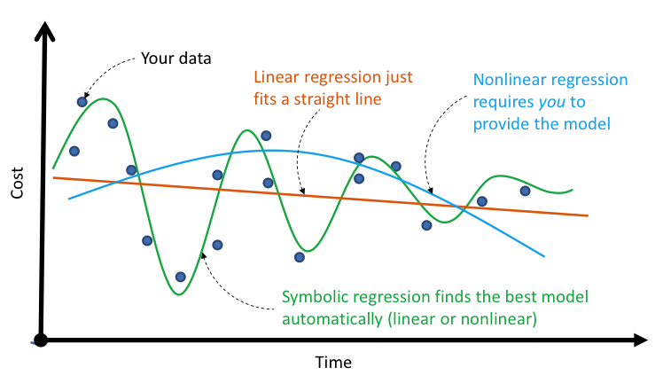
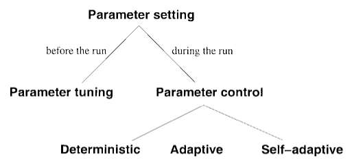

Parameter Setting in Genetic Programming
By Chris Choi
Parameter Setting in Genetic Programming
By Chris Choi
Genetic Programming - Components
Evaulation Function
Problem Representation (e.g. Tree)
Training Data (problem dependent)
Genetic Programming - General Structure
What is Genetic Programming (GP)?
Symbolic Regression with GP

Types of Parameter Setting

Future Work
Perform empirical tests (Parameter Tuning and Control)
Apply GP to real world problems
Use
Playground
for tests